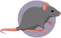

Living in Paris can be quite an adventure. Sometimes you get robbed in the subway, sometimes a pigeon flies in your face, and sometimes you discover there is a mouse in your trash. Don't panic, it could be worse, it could be a rat!
All you have to do it's to catch it, and maybe after all, a new adventure could start, think about Ratatouille!

LOOSE
Sed (saepe enim redeo ad Scipionem, cuius omnis sermo erat de amicitia) querebatur, quod omnibus in rebus homines diligentiores essent; capras et oves quot quisque haberet, dicere posse, amicos quot haberet, non posse dicere et in illis quidem parandis adhibere curam, in amicis eligendis neglegentis esse nec habere quasi signa quaedam et notas, quibus eos qui ad amicitias essent idonei, iudicarent.
WIN
Sed (saepe enim redeo ad Scipionem, cuius omnis sermo erat de amicitia) querebatur, quod omnibus in rebus homines diligentiores essent; capras et oves quot quisque haberet, dicere posse, amicos quot haberet, non posse dicere et in illis quidem parandis adhibere curam, in amicis eligendis neglegentis esse nec habere quasi signa quaedam et notas, quibus eos qui ad amicitias essent idonei, iudicarent.